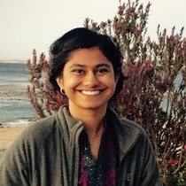
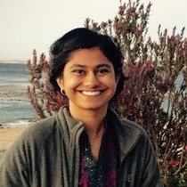

Workshop Chairs:
 Matthias Boehm
Matthias Boehm
Graz University of Technology, Austria
 Paroma Varma
Snorkel AI, USA
Doris Xin
UC Berkeley & Linea, USA
Steering Committee:
Matthias BoehmGraz University of Technology, Austria
 Paroma Varma
Snorkel AI, USA
Doris Xin
UC Berkeley & Linea, USA
Steering Committee:
- Juliana Freire (New York University)
- Bill Howe (University of Washington)
- H.V. Jagadish (University of Michigan)
- Volker Markl (TU Berlin)
- Stefan Seufert (Amazon Research)
- Markus Weimer (Microsoft AI)
- Khaled Ammar (University of Waterloo, Thomson Reuters Labs)
- Abolfazl Asudeh (University of Illinois at Chicago)
- Srikanta Bedathur (IIT Delhi)
- Renata Borovica-Gajic (University of Melbourne)
- Patrick Damme (TU Graz, Know-Center GmbH)
- Ahmed Elgohary (Microsoft)
- Edward Gan (Stanford University)
- Rainer Gemulla (University of Mannheim)
- Chris Jermaine (Rice University)
- Zoi Kaoudi (TU Berlin)
- Sanjay Krishnan (University of Chicago)
- Arun Kumar (UC San Diego)
- Milos Nikolic (University of Edinburgh)
- Tilmann Rabl (HPI, University of Potsdam)
- Berthold Reinwald (IBM Research - Almaden)
- Maximilian Schleich (University of Washington)
- Christin Seifert (University of Duisburg-Essen)
- Vraj Shah (UC San Diego)
- Nesime Tatbul (Intel Labs and MIT)
- Shirish Tatikonda (Target Corporation)
- Ce Zhang (ETH Zurich)